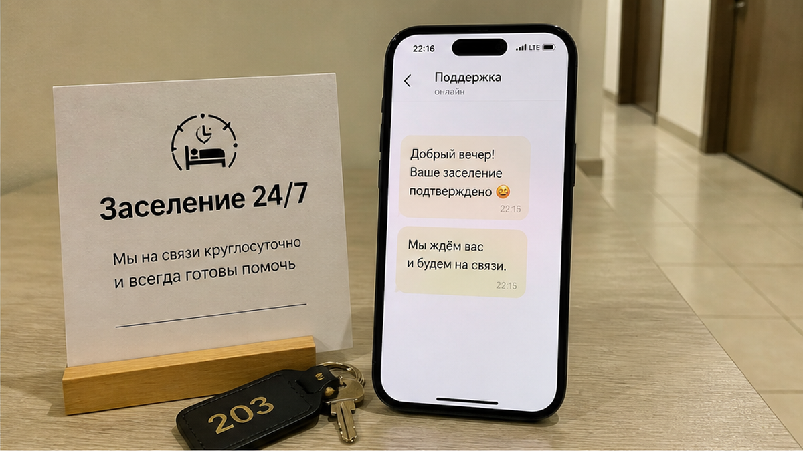
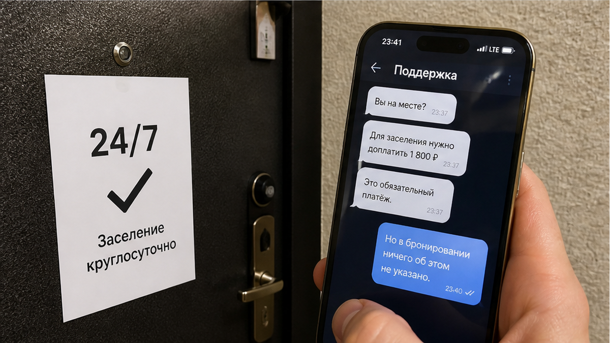
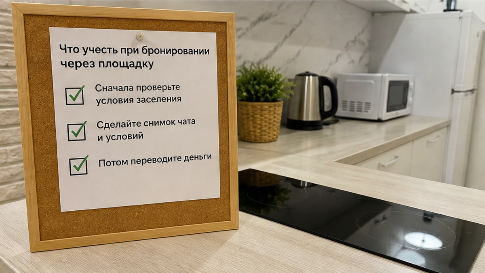

«Заселение 24/7» — крупно в карточке, рядом с фотографией кухни. Две ночи уже оплачены: около 5 600 ₽. Рейс задержали, и вы приезжаете глубокой ночью: такси, чемодан, подъезд, телефон почти разрядился. Пишете хозяину: «Я на месте», — и получаете ответ: «Ночной заезд +1 800 ₽, переводом на карту. Без доплаты заселю утром». Круглосуточный заезд внезапно оказывается доступен за отдельную плату, о которой до бронирования не сообщили.
Это составной кейс из разговоров с гостями, которые снимают квартиры посуточно в Тюмени. Он не относится к конкретной квартире «Доброго дома». Мы рассказываем о ситуации, чтобы напомнить: сначала проверьте условия и переписку, потом переводите деньги.
Я хост посуточной в Тюмени. Это «Добрый дом». На вопросы о заселении отвечаем в Telegram и MAX.

Гостья бронирует квартиру на две ночи. Через площадку вносит предоплату, общая стоимость проживания — около 5 600 ₽. В карточке написано: «Заселение 24/7», «Бесконтактный заезд», «Встретим в любое время». Для неё это важно: прилёт поздний, и не хочется зависеть от расписания хозяина.
В день поездки рейс задерживают на несколько часов. Гостья пишет в чат: «Рейс задержали, буду глубокой ночью, всё в силе?» Хозяин отвечает быстро и вежливо: «Да, конечно, ждём». Поводов волноваться пока нет.
Затем — такси, ночной город, двор и подъезд. Гостья сообщает, что приехала, и просит код от ключницы. В ответ приходит сообщение: «Ночной заезд оплачивается отдельно, +1 800 ₽. Переведите на карту, после этого отправлю код».
В описании, правилах объекта и подтверждении брони этой суммы не было. Но гостья уже у двери, с чемоданом и почти разряженным телефоном. Уставшему человеку сложно спорить и искать другой вариант посреди ночи. Поэтому важные условия нужно выяснять до поездки, а появившуюся у подъезда доплату — не оплачивать автоматически.

Иногда «заселение 24/7» используют как привлекательную формулировку в объявлении, а ночной заезд при этом предлагают оплатить отдельно. Хозяин может считать, что круглосуточно означает «в любое время, но за дополнительную плату». Гость же читает это как возможность заселиться ночью на условиях, указанных в бронировании.
Доплата за ночное заселение сама по себе не обязательно проблема. На рынке посуточной аренды встречается плата 1 500–2 000 ₽, особенно если хозяин или администратор должен лично приехать ночью. Это работа и затраченное время. Но сумму и условия нужно показать до бронирования — например, в описании или правилах объекта.
Когда доплата впервые появляется у закрытой двери, гость уже оказывается в неравном положении. А если заезд бесконтактный и хозяину не нужно никуда ехать, требование отдельной платы за отправку кода выглядит особенно неожиданно. Подробнее о том, как устроен бесконтактный заезд, мы писали в разборе код сработал, а ключница оказалась пустой.

Если бронь оформлена через Суточно.ру, дополнительные платежи не должны появляться после предоплаты, если их не было в условиях объявления. Гость соглашается на конкретную стоимость и правила. Требование внести новую сумму уже после оплаты не совпадает с теми условиями, которые были показаны при бронировании.
Если хозяин пишет: «Переведите на карту, иначе код не пришлю», сохраните переписку и сразу обратитесь в поддержку площадки. Сделайте это на месте, а не после поездки: поддержка сможет увидеть сообщения и связаться с хозяином. Перевод на личную карту в обход площадки может лишить вас её защиты, а оспорить такой платёж обычно сложнее.
Похожая ситуация бывает с залогами: деньги просят отдельно, переводом на карту, а вернуть их потом непросто. Мы разбирали такой случай в материале залог 3 000 ₽ в чате и заморозка 11 400 ₽ на экране оплаты.
Хозяин может считать, что гость приехал ночью и поэтому должен доплатить. Гостья в описанной ситуации опирается на карточку с пометкой «24/7» и на сообщение «ждём». Здесь важно не только время приезда, но и то, какие условия были указаны заранее.
Если ночная доплата не была заявлена до бронирования, требовать её после оплаты и у подъезда — значит менять условия в одностороннем порядке. Задержка рейса сама по себе не создаёт для гостя нового платежа. Другое дело, когда в правилах прямо написано: «Заезд после определённого часа — 1 500 ₽». Тогда гость видит стоимость заранее и может решить, подходит ли ему такой вариант.
Если рейс отменили и поездка не состоится, речь уже не о ночном заезде, а о возврате предоплаты. Этой теме посвящён отдельный материал: отменённый рейс и возврат предоплаты.
Постарайтесь действовать спокойно и сохранить все договорённости письменно.
Спокойное сообщение со ссылкой на условия помогает прояснить ситуацию. Если доплаты в объявлении не было, поддержка площадки сможет увидеть переписку и разобраться в обстоятельствах.
Ночной заезд — один из случаев, когда условие может всплыть в самый неудобный момент. Похожая история случается с ранним заселением: гость оплатил заезд утром, приезжает, а у двери узнаёт, что уборка ещё не закончена. Мы разбирали такую ситуацию в материале ранний заезд и ожидание у двери до уборки.
Перед оплатой важно понять, сколько стоит проживание и какие услуги включены в эту сумму. Если появляется новый платёж, которого нет в условиях, остановитесь и сначала проверьте информацию.
Мы — «Добрый дом», хосты посуточной аренды в Тюмени. Поздние прилёты и задержки рейсов — обычная часть поездок. Поэтому считаем важным сообщать гостям все условия до бронирования, а не после приезда. Если в карточке указано круглосуточное заселение, гость должен понимать, как оно работает и сколько стоит, ещё до оплаты.
Проверьте условия, сохраните переписку и не торопитесь с переводом. Пара минут на скриншоты и обращение в поддержку могут уберечь от незапланированных расходов.
Планируете поездку в Тюмень и прилетаете поздно? Напишите заранее — ответим цифрой, а не «договоримся». Следить за разборами можно в Telegram и MAX. Забронировать квартиру — через сайт или форму бронирования. Телефон: +7 (993) 574-83-22. Менеджер: Telegram менеджера.